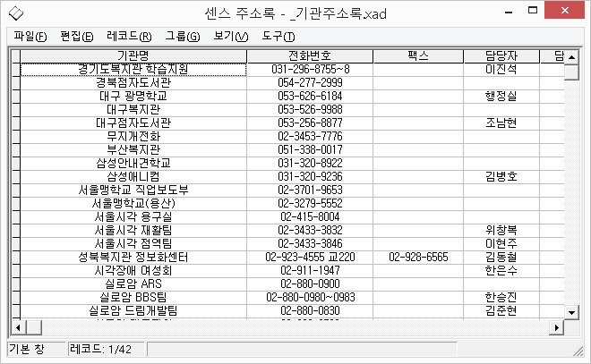

일반적으로 다음의 세 가지 방법을 사용해 센스 주소록을 실행할 수 있습니다.
1. 바탕화면 아이콘 사용 바탕화면에서 센스 주소록 단축아이콘을 찾아 <Enter>키를 눌러 실행합니다.
2. 시작 메뉴 사용
① '시작' 버튼을 눌러 시작 메뉴를 호출합니다.
② [프로그램] -> [센스리더] 메뉴 항목까지 차례로 이동합니다.
③ 센스 주소록을 찾아 실행합니다.
3. 연결 프로그램 사용
① 윈도우즈 탐색기나 센스 독서기를 사용하여 열기 원하는 파일(*.xad)이 있는 폴더까지 이동합니다.
② 열기 원하는 파일에 위치한 다음 <Enter>키를 누르면 센스 주소록이 실행되면서 해당 파일을 열어줍니다.
* 위 3번 방법을 사용하기 위해서는 센스 주소록이 '*.XAD' 파일에 대한 연결 프로그램으로 지정되어 있어야 합니다. 만일, 센스 주소록을 한 번도 실행하지 않은 경우라면 먼저 1, 2번 방법을 사용하여 센스 주소록을 실행합니다. 센스 주소록은 실행될 때 '*.XAD' 파일에 대한 연결 프로그램으로 자동 등록됩니다.
* 센스 주소록을 처음 실행하거나 최근 사용한 파일 정보가 없는 경우, 새로 만들기 기능이 실행되어 새로운 파일의 디자인 작업을 할 수 있게 됩니다. 반면, 이전에 사용한 파일 정보가 있는 경우에는 기본적으로 가장 최근에 사용한 파일을 실행시 자동으로 열어줍니다.
* 센스 주소록은 센스리더와 연동하여 동작되는 프로그램입니다. 만일 센스리더가 실행되어 있지 않다면 센스 주소록은 정상적으로 실행되지 않습니다.
센스 주소록의 화면은 다음과 같이 크게 4부분으로 나뉘어집니다.

1. 제목줄
프로그램 창의 가장 상단에 표시되며, 프로그램 이름과 현재 열려져 있는 파일의 경로 및 이름을 표시합니다.
2. 메뉴줄
제목줄 바로 아래 표시되며 센스 주소록의 기능 그룹을 표시합니다. 파일, 편집, 레코드, 그룹, 보기, 도구의 6가지가 있습니다. 각각의 자세한 내용은 해당 항목을 참고해 주시기 바랍니다.
3. 작업창
메뉴줄과 상태표시줄 사이에 가장 넓게 차지하고 있는 부분으로 실제 프로그램 사용의 주된 영역입니다.
작업창의 표시 형태는 사용하고 있는 작업의 종류에 따라 달라지는데 디자인, 데이터 편집, 기본, 그룹의 네 가지 작업이 있습니다.
4. 상태 표시줄
프로그램 창의 가장 하단에 표시되며 작업창의 종류, 레코드 수, 메뉴 도움말 등이 표시됩니다.
센스 주소록은 기록할 항목이 미리 정해져 있지 않고 사용자의 취향이나 용도에 맞게 구조를 정하여 사용할 수 있습니다.
예를들어 '고교동창.XAD' 파일은 '이름', '전화', '생일'로, '고객관리.XAD'는 '성명', '주소', '이메일' 등으로 따로 만들어 관리할 수 있습니다. 이렇게 파일에 기록될 항목과 형태를 정하는 작업을 디자인이라 합니다.
기본 작업은 입력된 데이터들을 살펴보는 작업입니다.
입력된 레코드를 대상으로 특정 사람의 연락처를 알아본다든지 생년월일을 확인하는 등의 용도로 사용됩니다. 센스 주소록 사용의 가장 일반적 작업입니다.
데이터 편집은 디자인 작업에 의해 정해진 구조데로 자료를 입력하는 작업입니다.
기존에 입력되어 있는 자료를 수정하거나 새로운 자료를 추가할 수 있습니다. 이를 통해 입력된 자료들은 검색, 전화 걸기, 이메일 보내기, 자동 계산 등의 작업에 활용됩니다.
한 파일에 기록되어 있는 자료라 해도 경우에 따라서는 그들을 여러 묶음으로 만들어 놓고 그 묶음 단위로 작업을 처리해야 하는 경우가 있습니다.
예를 들어 전체 동창생 연락처가 담겨있는 파일에서 대학 동창들에게만 메일을 보내는 작업을 해야 할 경우 "대학동창"그룹을 만들어 활용하는 것입니다. 그룹 작업은 이렇게 묶여진 그룹을 대상으로 작업하는 것을 의미합니다.
필드는 데이터 베이스의 레코드를 구성하고 있는 각 항목을 말합니다.
예를 들어 '이름', '전화', '주소'로 이루어진 데이터베이스가 있을 때 '이름', '전화', '주소' 각각은 필드에 해당됩니다.
레코드는 데이터베이스에서 여러 개의 필드로 이루어진 자료의 한 묶음을 말합니다.
예를 들어 '이름', '성별', '전화'로 이루어진 주소록이 있고 그 중 한 사람의 정보가 '홍길동', '남', '123-4567'이라고 할 때, 이 한 사람의 전체 정보를 레코드라 합니다.